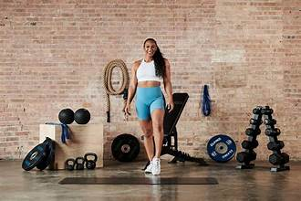
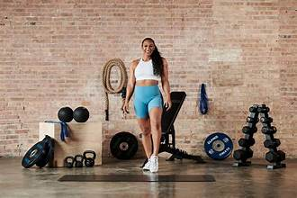
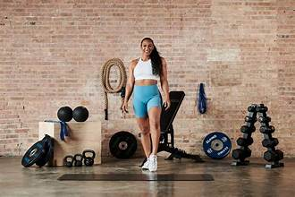

Before diving into the details of the chart, it's essential to understand its purpose. This chart serves as a guide for individuals looking to optimize their fitness journey by aligning their goals with appropriate dietary and exercise strategies. Divided into three main categories—Bulk, Cut, and Maintain—it offers tailored recommendations for calorie intake, macronutrient distribution, and exercise focus based on specific objectives. Whether aiming to build muscle mass, shed body fat, or sustain current weight, this chart outlines the fundamental principles to help individuals determine their path and make informed decisions regarding nutrition and training. By providing clear guidelines for each goal, it empowers individuals to customize their approach and work towards achieving desired results effectively and efficiently.
| Bulk | Cut | Maintain |
|---|---|---|
| Consume surplus calories to gain muscle mass | Consume deficit calories to lose body fat | Consume maintenance calories to maintain current weight |
| High protein, moderate carbs, moderate fats | High protein, low carbs, moderate fats | Moderate protein, moderate carbs, moderate fats |
| Focus on strength training and hypertrophy | Combine resistance training with cardio | Maintain regular exercise routine |

Choosing a fitness goal from the options provided—Bulk, Cut, or Maintain—provides a clear starting point for your fitness journey. However, it's important to remember that preferences and priorities may change over time. If you find that the approach you initially selected isn't aligning with your expectations or lifestyle, there's no need to worry. Your body's response to different training and nutrition strategies can vary, and it's entirely possible to adjust your approach to better suit your needs and preferences. Whether you realize that you prefer a different training style, dietary approach, or overall goal, know that flexibility is key in achieving long-term success in fitness. By staying open to exploring different options and being willing to adapt your approach as needed, you can continue to progress towards your fitness goals while ensuring that your journey remains enjoyable and sustainable. Remember, the most important thing is finding a routine and lifestyle that you can maintain and enjoy in the long run.